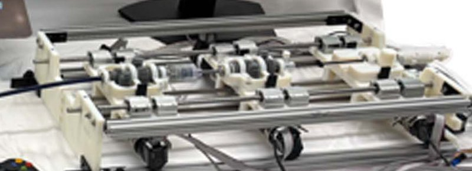

Academic bedside robots · dupont_teer_pistorius2025
TEER robot
Boston Children's robotic drive for transcatheter edge-to-edge mitral repair (MitraClip cartridges on a universal catheter drive)

1 / 5


- Family
- Academic bedside robots (academic)
- Devices
- Abbott MitraClip NTR through an Edwards PASCAL Precision transseptal sheath; manual handles replaced by transmission cartridges (Sec. II)
- Degrees of freedom
- 8 used (transseptal sheath 3, intermediate sheath 3, device sheath 2); drive supports up to four telescoping sheaths with up to four motorised inputs each
- Push
- Linear stage
- Twist
- Handle or knob
- Tested up to
- Phantom
- Sim-to-real
- None found — No simulation-trained controller found for this robot.
Testing
- Highest level
- Phantom
- What was tested
- silicone mitral model (United Biologics); one operator; 5 manual and 5 robotic trials per step test; 30 manual and 30 robotic clip deliveries, 10 per segment A1P1, A2P2, A3P3 (Sec. IV)
- Key numbers
- segment 2 robotic time 52% of manual; mean clip placement error from 3 mm to below 1 mm for segments 2 and 3; inadvertent clip rotation 28 +- 4 deg manual vs 6 +- 7 deg robotic; speed limits 5.46 deg/s flexure, 14.56 deg/s roll, 6 mm/s translation
Mechanism
- Push (translation)
- linear-stage+clamp (device-agnostic carts translate each cartridge)
- Twist (rotation)
- motor-driven worm gears for bending and rotation; clamp on the handle for device-sheath roll
- Device range
- procedure-specific cartridges on device-agnostic carts
- Target anatomy
- mitral valve (TEER)
Sensing and interface
- Force sensing
- none reported
- Leader and haptics
- game controller (haptic device input supported by the ROS 2 software)
- Imaging
- N.R.
- Sterility
- N.R.
Size
- Footprint (mm)
- N.R.
- Mass (kg)
- N.R.
Simulation
- Simulation model
- none found
- Sim-trained controller
- none found
Versions
- Lineage
- 2025 arXiv; 2026 RAL; the universal drive itself is announced for a separate letter
Sources
- Using Robotics to Improve Transcatheter Edge-to-Edge Repair of the Mitral Valve · IEEE Robotics and Automation Letters, 2026 · doi:10.1109/lra.2026.3698357 [pistorius2026_using]
Notes
- Notes
- Distinct from the Dupont autonomous intracardiac catheter (robots_A3 dupont_fagogenis2019).
This record
- Read level
- full
- Picture
- pistorius2026_teer_RAL Fig. 4(b) robotic clip delivery system (drive system with three cartridges) ↗ — licence: publisher copyright (IEEE; NIH author manuscript PMC13271658); grade C
- Picture changes
- native extract (2050x1926); cropped above the label arrow, so the wheels are cut at the bottom; not upscaled
- Found by
- gap: Gap searches for robots the other searches missed.
- Data
- JSON · YAML:
records/robots/dupont_teer_pistorius2025.yaml - Correction
- Suggest a correction [repository not created yet]
← SurgiPulseTelos →